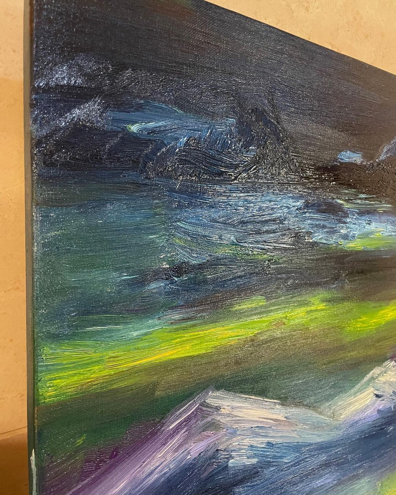
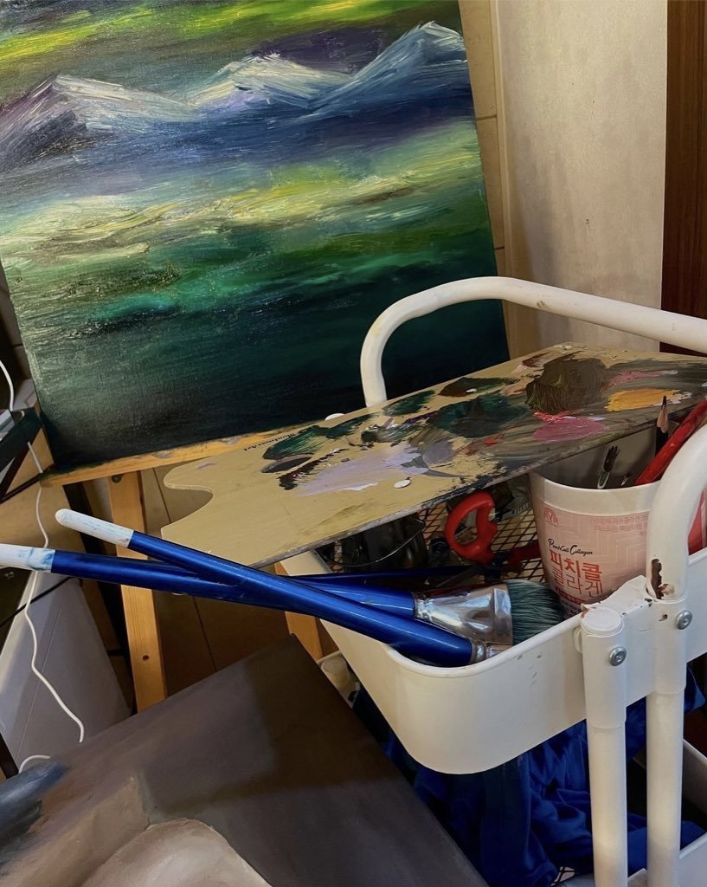
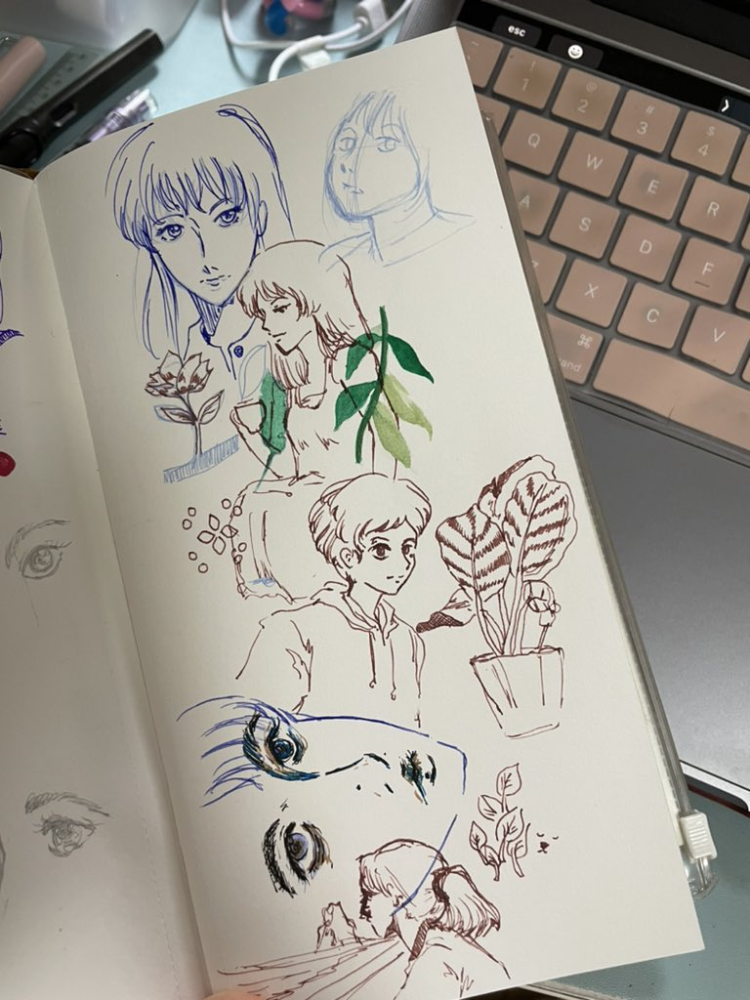
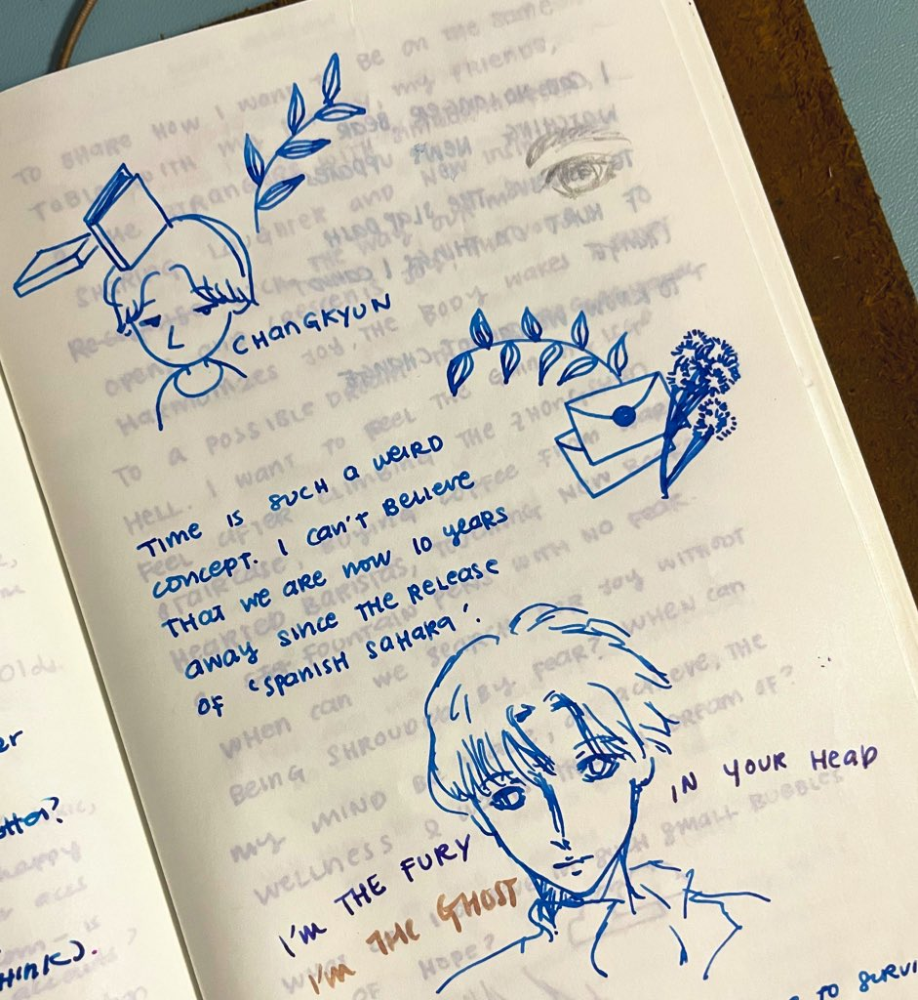

Experience / Arts
Since high school, I have been so interested in the arts because I can express my unspoken thoughts on plain paper and make them visible to others. After all, it is hard to say but easy to show and convey the message through art.
Sometimes I will give my art to someone that I think of while painting. Some even want to buy it, but I did not sell my art because I still think I’m lacking in painting. However, I try to focus on my improvement and make use of my talents for something that will benefit me.
All of my skills are average, but it is enough to make me feel talented and meaningful to me.
 
 